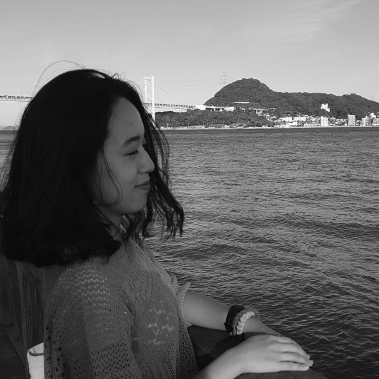
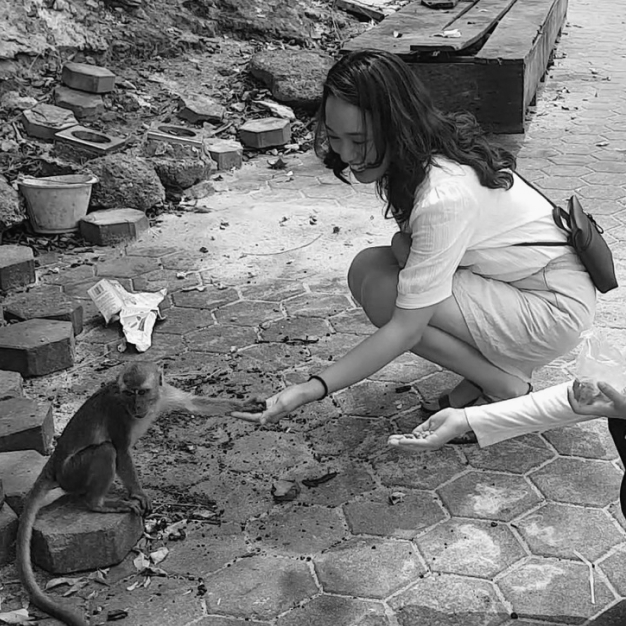
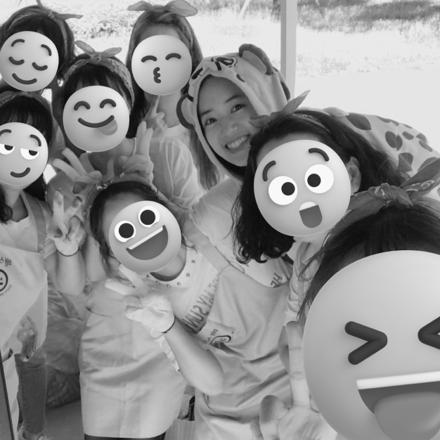
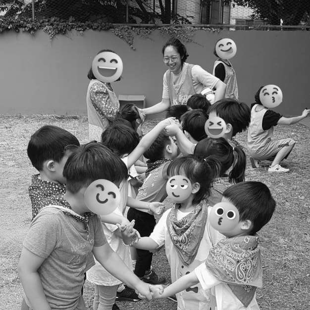
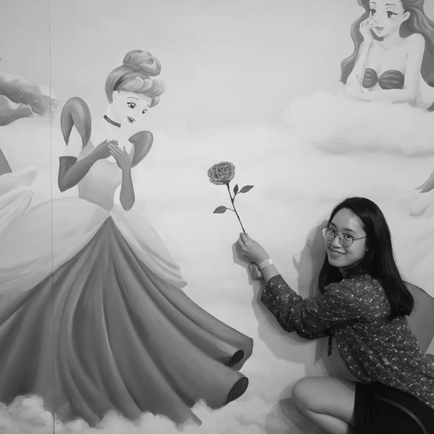

안녕하세요. 프론트엔드 개발자를 꿈꾸는 최진주 입니다.
저는 하루를 솔직한 모습으로 채워갑니다. 그 무엇보다 정직하고 성실하게 살아가는 것이 제일 중요하다고
생각합니다. 프론트엔드 개발자를 위한 첫 걸음, 부족한 점이 많지만 성실하게 채운 오늘이
내일의 어려운 상황에서 올바른 판단의 기준이 될 것이라 믿습니다. 꾸준히 열심을 채우겠습니다.
downToEarth

responsive
일상을 넓게 살펴보고 깊게 생각합니다.
저는 평소에 주변을 바라보면서 다양함을 찾고 여러 가지 상황에 대한 경우의 수를
생각해봅니다. 이를 바탕으로 예상치 못한 돌발 상황에서 침착하게 해결법을 찾을 수 있습니다. 코딩을 하면서 만나는
다양한 상황에서도 유연하게 대응할 수 있도록 여러 가지를 배우고 생각하는 자세를 잃지 않을 것입니다.
responsive

curious
저의 호기심은 항상 대기상태입니다.
누군가에게 평범한 일들이 제게는 특별함으로 다가올 때가 많습니다. 특별함은 궁금증으로, 나아가
도전정신으로 이어지곤 합니다. 제 손으로 직접 경험해보면서 당연한 것들에 대해 새삼스레 배우고 또 배웁니다.
끊이지 않는 호기심으로 도전하고 성장하는 삶을 그려보고 싶습니다.
curious
tenacious
시작한 일에 진심을 다합니다.
자전거를 타고 새로운 길을 찾아다니는 것을 좋아합니다. 막히는 길을 마주하거나 어려움이 생겨도
포기하지 않습니다. 내딛은 첫 걸음의 끝에서 스스로를 돌아보며 큰 성취감을 느낍니다.
코딩을 하면서 꼼꼼하고 정확한 결과를 만들고 싶은 욕심에 때로는 멈추기도 하고, 쫓아가기
바쁠지라도 끝까지 해내는 모습을 보여드리겠습니다.
tenacious

cooperative
둥글게 살아갑니다.
세상은 나홀로 살아가는 것이 아니라 다른 이와 서로 도우며 함께 걸어가는 것이라 생각합니다.
눈으로 보이는 이어짐이 없더라도 매순간 다른 누군가의 노력과 희생으로 일상이 원만하게 흘러감을 되새깁니다.
매일을 함께 할 동료분들과 소통하고 공감하며 원만한 관계를 맺어나가고 싶습니다.
cooperative

supportive
긍정적인 변화를 이끌어냅니다.
저의 작은 손길이 누군가에게 스며들어 따뜻한 빛이 될 수 있도록 응원하고 지지합니다.
느리지만 조금씩 변화한 오늘이 내일의 새로운 희망을 만든다고 생각합니다. 당장 나타나는 효과가
없더라도 언제나 제 자신과 주변을 응원하며 밝은 에너지를 공유하고 싶습니다.
supportive

playful
단점보다는 유머를 찾습니다.
행복해서 웃는 게 아니라 웃어서 행복해진다는 말이 이전에는 와닿지 않았습니다. 시간이
흐르니 조금 알 것도 같습니다. 하루 동안 웃을 일이 얼마나 있을까요? 지치고 무너져도 미소를 회복합니다.
힘들었던 일은 웃어 넘겨버리고, 한 걸음 더 나아갈 힘을 만듭니다.